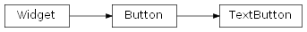
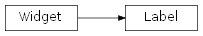

Interface¶
This module is the one that generates events for widgets and buttons that you use in
your data/script/GUI file or packge.
-
core.interface.window= None¶ window.Window unique instance, initialized in the first tic of the interface loop.
Window¶
-
class
core.interface.window.Window[source]¶ Handles the game window and cursor.
Internally it throws a raycast from the cursor position in the scene_gui and the scene_game (if aviable) to generate mouse events. The current implementation only works with orthographic cameras with orientation (0,0,0). The recomended height from the world origin is 10.
Widget¶
-
class
core.interface.widget.Widget(obj)[source]¶ This is a widget
-
obj¶ The KX_GameObject used as the base of the widget.
-
transformable¶ List of objects that will be also tranformed with the widget (Recursive).
-
position¶ The position of the widget in world coordinates.
Type: mathutils.Vector
-
scale¶ The scale of the widget.
Type: mathutils.Vector
-
rotation¶ The rotation of the widget in world coordinates.
Type: mathutils.Euler
-
Buttons¶

A button Widget.
Parameters: - sprite (string or
KX_GameObject) – The sprite that will be used as the base of the widget. - over (string or
KX_GameObject) – The sprite that will be used on top of the base when the button is selected.
Deletes the button
Called when the mouse just enters the button space. You must use
super().mouse_in()when overriding it.
Called when the mouse just exits the button space. You must use
super().mouse_out()when overriding it.
Called when the mouse is over the button space.
TODO
Called when clicking the button
It dishables the button events.
It enables the button events. (Enabled by default)
- sprite (string or
A button Widget with a Label.
Parameters: - sprite (string or
KX_GameObject) – The sprite that will be used as the base of the widget. - over (string,
KX_GameObjector None) – The sprite that will be used on top of the base when the button is selected. - font (string) – The font of the label.
- text (string) – The text of the label.
- size (integer) – The size of the label.
- align (Alignation Constants) – The alignation of the text in the label.
It enables the button events. (Enabled by default)
It dishables the button events.
Deletes the button
Called when clicking the button
Called when the mouse just enters the button space. You must use
super().mouse_in()when overriding it.
Called when the mouse just exits the button space. You must use
super().mouse_out()when overriding it.
Called when the mouse is over the button space.
TODO
- sprite (string or
Labels¶

-
core.interface.label.reverse_text(text)[source]¶ Returns the reversed version of text
Parameters: text (string) – Original text. Returns: Reversed text.
-
class
core.interface.label.Label(font, text, size=16, align=0, position=[0, 0, 0])[source]¶ The basic Text object of BGECore.
Labels are dynamic texts that can be instantiated at runtime in any given position, used in Widgets or as a replacemnet for BGE text objects. To replace a text object the TextObject must have two game properties “(String) Font” and “(String[Right,Center,Left]) Align”. Labels need a font object to work. Font objects are created as old BGE dynamic text (2.49) and have some advantages over new text objects. Font object must be placed on an inactive layer of the GUI scene and must be prefixed with the Font keyword, e.j: Font.Hobo, Font.Title
Parameters: - font (string) – The font of the label.
- text (string) – The text of the label.
- size (integer) – The size of the label.
- align (Alignation Constants) – The alignation of the text in the label.
- position (
mathutils.Vectoror size-3 list) – The label position.
-
text¶ Text that the Label displays.
Type: String
-
font¶ Font name, the same as the object name but without the “Font.” prefix.
Type: String
-
size¶ Type: Integer
-
align¶ Returns: Alignation Type: Alignation Constants
-
visible¶ The visibility of the Label.
Type: bool
Alignation Constants¶
core.interface.label.ALIGN_LEFT
core.interface.label.ALIGN_CENTER
core.interface.label.ALIGN_RIGHT